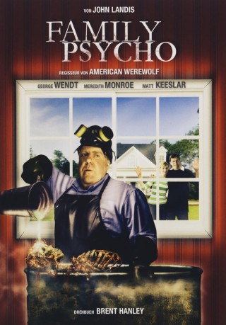

#8900 Masters of Horror S02E02 - Family Psycho
 
 IMDB-Wertung: 7.2 / 10
IMDB-Wertung: 7.2 / 10  Metascore: 0
Metascore: 0 
Der wohlbeleibte, erzkonservative Mitfünfziger Harold (George Wendt) führt ein scheinbar vorbildliches Junggesellendasein. Doch im Keller bastelt er an seiner perfekten Familie. Seine Familienmitglieder rekrutiert er im Supermarkt oder der nächstgelegenen Schule. Er brennt seinen Opfern mit ätzender Säure das Fleisch von den Knochen, verdrahtet die Skelette und positioniert sie liebevoll in seinem Heim. Als David (Matt Keeslar, "Scream 3") und die attraktive Celia (Meredith Monroe, "Dawson's Creek") nebenan einziehen, beginnt Harold über eine neue "Ehefrau" nachzudenken. Wie kann er ahnen, dass seine neuen Nachbarn ihr ganz eigenes Spiel spielen ...
Jahr: 2006
Dauer: 55 Minuten
FSK: 16
Land: USA Studio: Showtime NetworksTonspuren: DTS - ,
Untertitel:
Auflösung: 1080p (1920x1080) Größe: 4720 MB
Genre: Horror
Regisseur:  John Landis
John Landis
Drehbuch: Mick Garris
Soundtrack: Peter Bernstein
Darsteller:
 George Wendt als
George Wendt als - Meredith Monroe als
 Matt Keeslar als
Matt Keeslar als - Haley Guiel als
- Kerry Sandomirsky als
 Emily Tennant als
Emily Tennant als - Aleita Northey als
- Frances Flanagan als
- John B. Scott als
- Nancy Whyte als
- Emily Hope als
- Donald R. Mintz als
Datei: X:\FSK18-Collections\Masters of Horror\Masters of Horror S02E02 - Family Psycho (2006, FSK16, 1920x1080).mkv seit 04.05.2018
Festplatte: FSK18
 Es gibt insgesamt 30 Filme in der Gruppe 'FSK18-Collections\Masters of Horror'
Es gibt insgesamt 30 Filme in der Gruppe 'FSK18-Collections\Masters of Horror'